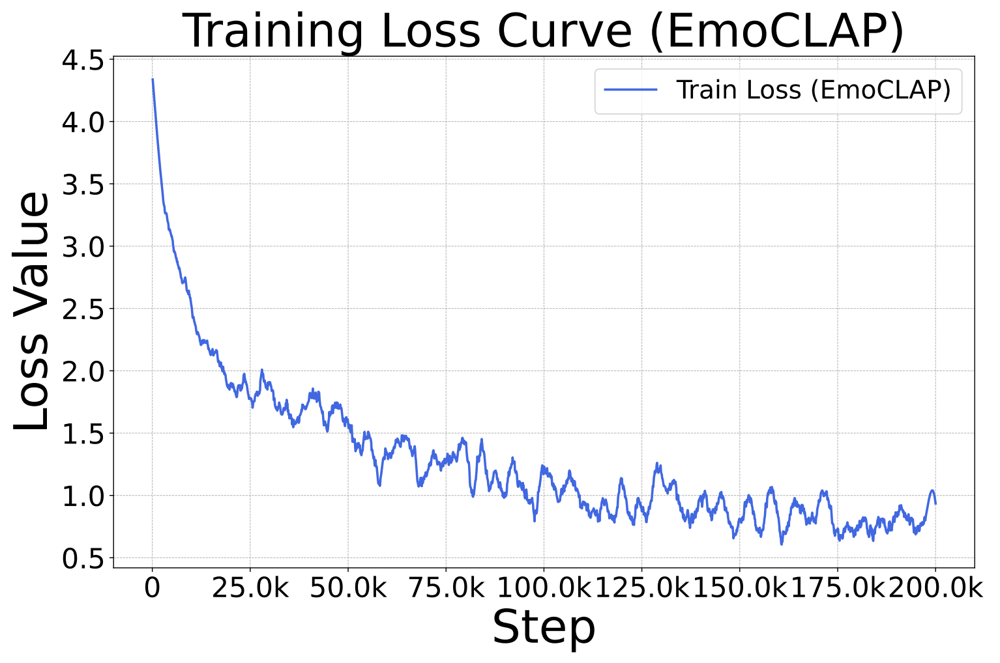
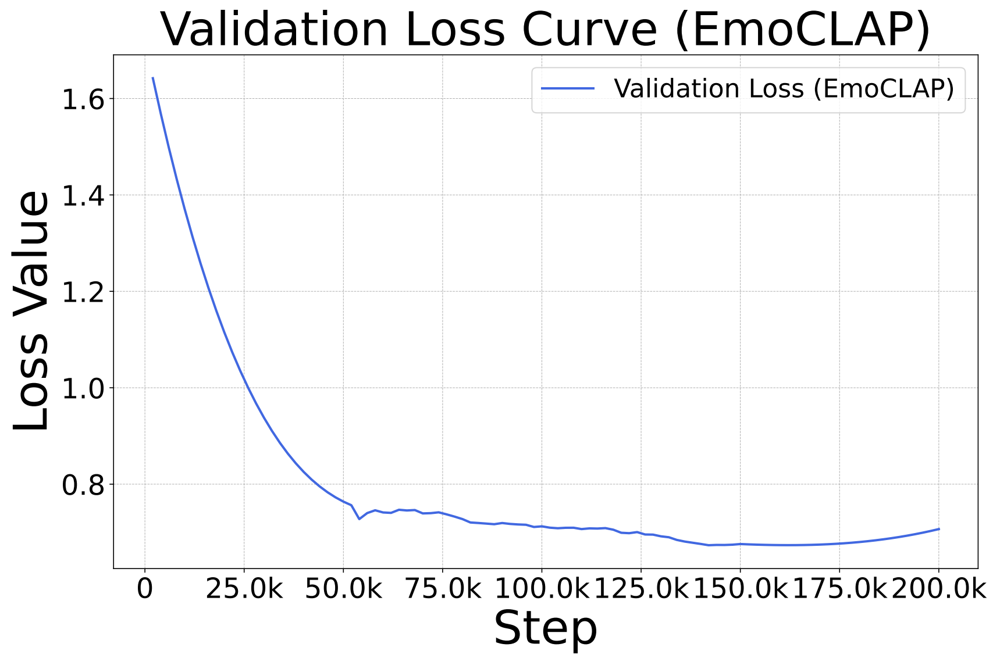

Towards Emotionally Consistent Text-Based Speech Editing: Introducing EmoCorrector and ECD-TSE Dataset
EmoCLAP loss_curve


Audio Samples
Origin Text: An owl screeched angrily from a nearby branch. → Edited Text: An owl hooted joyfully from a nearby branch.
| A3T(Before Correction) | A3T(After Correction) | FluentSpeech(Before Correction) | FluentSpeech(After Correction) | VoiceCraft(Before Correction) | VoiceCraft(After Correction) |
|---|---|---|---|---|---|
Origin Text: I'll dispute that information for you. → Edited Text: I'll check that information for you.
| A3T(Before Correction) | A3T(After Correction) | FluentSpeech(Before Correction) | FluentSpeech(After Correction) | VoiceCraft(Before Correction) | VoiceCraft(After Correction) |
|---|---|---|---|---|---|
Origin Text: How was your lonely trip? → Edited Text: How was your fantastic trip?
| A3T(Before Correction) | A3T(After Correction) | FluentSpeech(Before Correction) | FluentSpeech(After Correction) | VoiceCraft(Before Correction) | VoiceCraft(After Correction) |
|---|---|---|---|---|---|